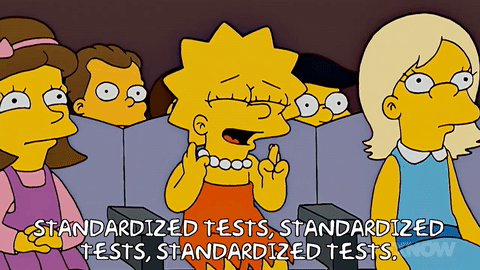
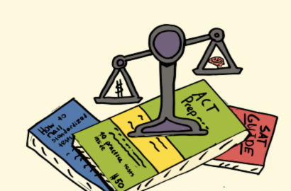
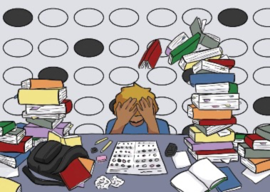
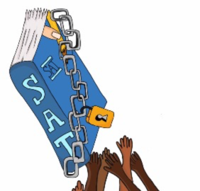

A test that doesn't truly level the playing field...
By Kylie Gorsky
Posted 12/15/2022, at 11:59 p.m.

Source: Fox
For years standardized testing has been a great debate within the United States. We as a people have been questioning whether or not they are a useful tool to measure intelligence in the college admissions process. To understand the two sides, it is important to first understand the two different types of admissions tests colleges accept as a part of the process.
There’s two different types of standardized tests, the SAT and the ACT. The difference between the two is the scoring and the subjects tested. The ACT is scored out of 36 and has a standard english section, math section, and a science section. The SAT however, is divided into three or four sections depending on which variation a student takes. The standard version is made up of a math section, writing section, and reading section, while the extended version includes an essay portion as well and is scored out of 2400 as opposed to a standard 1600 points.
Admissions offices all over the country have acknowledged for years that standardized testing is the only way to level the playing field for the millions of students applying for admission into colleges and universities. This being purely based on the fact that since every school district has different teachers and different ways of learning, it was unfair to judge a student solely based on transcript due to advantages and disadvantages of certain school systems. However, the real discrepancy lies within the tests, as students of different races, socioeconomic standings, backgrounds, and cultures are all sitting down to take the same test without the same resources for preparation.
While the debate is ongoing, the use of the tests were called into question when society underwent the global COVID-19 pandemic in which case, there was less opportunity for students to take the tests in a proper environment. According to a study done by various journalists at USA today, non-white communities were the highest effected by the coronavirus and according to an additional statement from the American Psychological Association, African American and Latino neighborhoods were the highest effected neighborhoods health-wise and economically.
Since the data was lacking for the 2020 year as various SATs were canceled due to the prevention of the spread of COVID, it was important to look at the most recent data which makes it clear that minority groups scored lower than the white group for the 2021-2022 year. This 386 point drop between the White subgroup and African American subgroup would likely give the White subgroup the upper hand in getting admitted into more prestigious schools taking test scores into account. While assumptions cannot be made, there is a high chance that if certain minority groups suffered a higher financial burden during the previous year, it would have made it more difficult for them to provide their students with practice books and high quality tutors. Unfortunately, these tests seem to create a further division in the admissions process, hurting minority students’ chances in getting into the university of their choice.
While COVID-19 definitely started the test-optional trend in which students could either submit or not submit their scores without penalty, more and more admissions offices are looking into the disparity the tests are creating in terms of putting certain subgroups at a disadvantage. I was lucky enough to get in contact with one of the top college counselors in New Jersey, Falynn Basslone to get her opinion on the use of standardized testing. She says, “I love a test optional status for a college, and I hope that every college will go that way so students can focus on their transcript and skills because so many are at an unfair disadvantage in the process.” While she acknowledged that the tests do help to serve as a standard measure of intelligence for students, she questioned how one test taken on one day could affect a child’s future for the rest of their life. Taking this into account, how could we leave the admissions process to so heavily depend on the use of tests when they are so clearly discriminatory as opposed to leveling within this difficult process.

Source: The Standard American School in London

Source: The State Press

Source: The Evanstonian
While the tests definitely create a disparity and disproportionate admissions rate among different racial subgroups it is also imperative to look into the tests on a deeper level in terms of the economic disparity it prompts as well. The ACT, as mentioned before, is another standardized test in competition with the SAT and all colleges and universities accept this test as well even though it was developed later.
The ACT is required to release a data set on the average composite scores of students from every state across the country for every year the test is distributed. In order to make this data relevant, it was also important to look into the highest income states in the country, and the lowest income states in the country, and cross reference this information with the scores. By scrolling over these states the average composite score will appear for each state. With this information, wealth impact on students’ scores could be more clearly defined.
According to the list from the U.S. News revealing the highest income/wealthiest states in the United States of 2022, at least 90% of these states hold a ranking in the top 40% of highest average composite scores for the ACT. Additionally, at least five of these states hold a place in the nation’s top 20% average composite scores for the ACT. Alternatively, at least 70% of the states with the lowest income in the nation hold a ranking in the bottom 20% of average composite ACT scores. Overall, all 10 of these states are in the bottom half of the average composite scores for the ACT.
Cross-referencing the average composite ACT scores with the lowest and highest income areas helps to provide evidence to back up prior claims that students coming from low income areas are more likely to do poorly on their standardized tests. As aforementioned, while assumptions cannot be made about the resources in lower income areas, it is very possible that students living in low income areas have less access to high quality materials to prep them for these tests. Ultimately, these tests are creating a division and further highlighting the wealth gap between students, leaving students from lower income areas with less chance to be admitted into the university of their choice and further their education.
College counselor Falynn Basslone says, “The tests can be very unfair when you are looking at the socioeconomic perspective, higher-middle class can afford higher quality tutors.” She goes on to discuss that although school systems are significantly different and schooling also has a lot to do with socioeconomic standing, a transcript is a better indicator of what a student’s success may be like in college.
With all of this said, it is important to revisit the debate of making every school test optional as various sources back up the idea that standardized testing is actually discriminatory against different racial backgrounds and socioeconomic status. The college admissions process should be as fair and equal for all students so they can have the best chance at getting admitted to their university of choice to give them the same opportunities in the future as other students will gain.